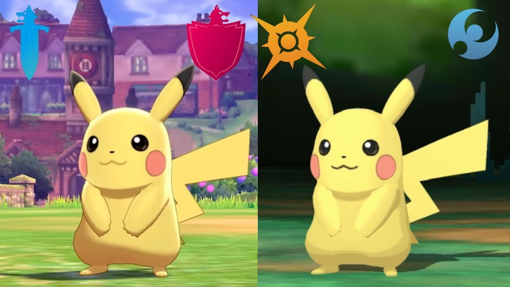

"Well, they have NO excuse for not putting every Pokemon in the game! They are CLEARLY reusing the models! They aren't making new models of old Pokemon like they said! They're lying to us! Look, the models even look the same!" you say.
Well of course the models look the same! Isn't that how Pikachu looks? They didn't change the design, why would the new model look the same? If Gamefreak says they're making new models, they are until someone can actually prove it otherwise. Which means that Gamefreak's 'excuse' is a valid one for not adding every Pokemon.
And that's just the model itself. They still have to animate the thing.
"But they're reusing animations!"
Yeah, yeah, yeah. They look the same. But if you're as pressed for time as Gamefreak is, why would you make the animations any better than the previous games? They still had to design new Pokemon, a new region, new characters, etc. And they're probably already planning they're next game as they work.
This isn't Super Pikachu Ultimate, The Legend of Wobbuffet: Breath of the Meowth Odyssey. Pokemon Sword and Shield are just another entry in the series, and as such, look and feel the same as the past titles. This time, the games are on the Switch, which means they are essentially starting from scratch. Yes, this means remaking the models of older Pokemon, not to mention creating an entirely new generation and game on top of that. Gamefreak is right:
"Well then, just stop adding Pokemon," you say, as if that wouldn't drastically alter the franchise and its fanbase.
If they were to stop adding new Pokemon in favor of just featuring the old ones, that would most likely start another uproar. New Pokemon are what gives a game, a new generation of Pokemon, its character. It's what made (most) people hate Unova and love Alola. Take that away and Pokemon games would just start to feel the same, even more the same then they already are, as past games.
So how do we stop this problem? It seems no matter what GF decides to do, it would cause an uproar.
OPTION ONE: Remove past Pokemon in favor of new Pokemon. It's what they're trying to do now, and nobody seems to like it. OPTION TWO: Stop adding new Pokemon to new games. That would just make Pokemon feel repetitive. It'll get old catching the same 1000 Pokemon every game. That's literally why new Pokemon get added in the first place.
Regional Variants are the key to this solution. Stop adding new species of Pokemon, let the old ones return. BUT, about half the ones that return will have new designs, abilities, and roles in the game. Regional Variants! If you give half the Pokedex different forms with every new entry, fans will be excited to see how they're favorite Pokemon get redesigned in the next new titles. Sure, it's a cheap shot, but it'll please both those who want to have all of their old Pokemon return, and those who want to see new designs every generation.